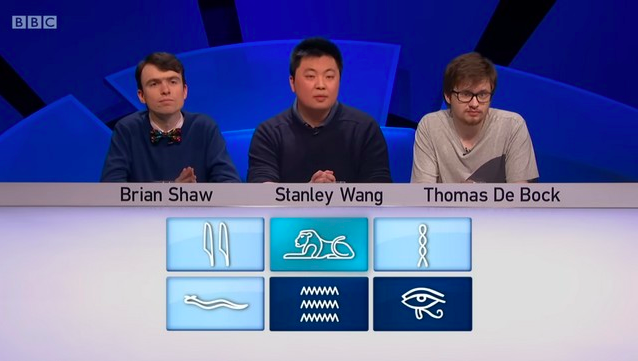

Only Connect
Le plus difficile des quiz télévisés
Le lundi soir, sur BBC2, le Royaume-Uni se passionne pour un quiz à la difficulté extrême. Son concept, tellement british, n'a pas été exporté à l'étranger. Voici comment sont préparées ses énigmes, aussi brillantes qu'improbables.

Format

Particularités

Exemples

Vidéos

Histoire

Plus d'infos
Format
Un concept redoutable et versatile.
Le principe se décline en quatre manches. La première est la plus connue — il faut relier des choses d’apparence aléatoire. Les équipes ont quarante secondes et peuvent demander quatre indices, qui évoquent de plus en plus la réponse. Voici la toute première de l’histoire de l’émission, en 2008.
Tous les recoins de la culture générale et de pop-culture peuvent être mobilisés. Et si cette dernière est nécessaire, il faut user de « pensée latérale » pour comprendre les énigmes lancées aux candidats : entre deux questions demandant des connaissances précises peut se cacher quelque chose de bien plus simple. Découvrir « Only Connect », c’est passer de stupéfaction en stupéfaction. Une fois par épisode, l’apparition de la question musicale, redoutée, fait rugir tout le monde.
Dans la deuxième manche, cette fois, il faut trouver au plus tôt le quatrième indice : il y a toujours une connexion, et les indices progressent dans une séquence qu’il faut aussi comprendre. Si le premier indice est « Chirac », vous pourrez buzzer et dire « Macron » et hop, cinq points raflés, un moment évidemment rare dans le jeu qui demande soit une connaissance très précise, soit un peu de divination. Mais vous l’aurez compris, c’est un peu plus difficile que ça. À haut niveau, ça peut sembler particulièrement cryptique.

Ensuite, en troisième manche les candidats doivent triompher des « murs », où ils doivent ordonner 16 indices par groupes de quatre, concept repris par le New York Times avec son jeu « Connexions ».

Tiberius Claudius Caesar Augustus Germanicus. Fastoche, non ? (Capture d’écran BBC2)
Un match se conclut sur la quatrième manche avec les « voyelles manquantes » — où tout le monde a le lien et la réponse, mais les voyelles des propositions ont été enlevées, et des espaces rajoutés un peu partout. Tout ça constitue un menu par épisode, scientifiquement composé par une trentaine d’auteurs, qui grimpe en difficulté toute la saison. En ce sens, les questions des demi-finales et finales sont aussi brillantes qu’improbables.
Particularités
Un jeu extrèmement complexe.
Ce jeu se démarque par plusieurs aspects : sa très grande difficulté, qui croît sept mois durant dans un tournoi où 16 équipes de trois personnes s’éliminent les unes les autres.
Rien à gagner !
À la clé : zéro centime, un trophée et un titre prestigieux dans le monde du trivia britannique (autre nom des quiz).
Une présentatrice pas piquée des vers...
Sa présentatrice, Victoria Coren-Mitchell, joueuse de poker pro et autrice, est le cœur et l’âme de ce format souvent drôle : sarcastique et pince-sans-rire avec les candidats — des têtes qui, généralement, ont rêvé d’être là.
De l'humour...Oh So British...!
On les présente avec une anecdote improbable : je suis Benjamin Benoit, et une morsure de coati m’a valu quelques visites d’infirmeries de cambrousse au Brésil. « On y trouve une certaine bizarrerie, mais elle est assumée », résume Jonathan Cairns, champion du jeu avec les Data Wizards.
Anecdotes
Jadis, on choisissait les questions derrière une lettre grecque. Un spectateur a trouvé ça « trop snob ». La saison suivante, ils sont passés aux hiéroglyphes. Tellement plus simple, nespa.
Etymologie du titre
L'expression « Only Connect » vient du chapitre 22 du roman d'Edward Morgan Forster Howards End, publié en 1910. Elle est prononcée par Margaret Schlegel : « Il suffit de mettre en communication (Only Connect) ! En cela tenait tout son sermon. Il suffit de mettre en communication la prose et la passion, et toutes deux s’élèveront ; on contemplera l’amour humain à sa hauteur. Ne plus vivre en fragments. Il suffit de mettre en communication de sorte que la bête et le moine, dépouillés de l’isolement qui leur donne vie à l’un et à l’autre, mourront. »
Verra-t-on un jour « Only Connect » en France ?
Très peu probable, et même hors du Royaume-Uni. Ce jeu est l’incarnation d’une culture du quiz bien britannique. Le matin, les jeux ressemblent aux nôtres — mais le lundi soir, c’est le « Quizzy Monday » sur BBC2 — où « Only Connect » (à 20 heures) est entouré de « Mastermind » (19 h 30), émission de quiz à grand gravitas — les questions sont posées et reçues avec un sérieux extrême, le concept étant inspiré des interrogatoires de la Gestapo — et du vénérable « University Challenge » (20 h 30). « Un créneau où la BBC remplit sa mission d’être divertissante et éducative », analyse Selina Conroy, de l’équipe des Après-Skiers. « Le Royaume-Uni est l’un des rares marchés où l’on quizze sans prix, juste pour la fierté, la gloire et le plaisir », abonde Jack Waley-Cohen.
C’est une forme de sérialité différente de nos jeux « à champions » — ici, l’écriture a la même importance que les candidats. Et si tous les candidats contactés ont parfois participé à de nombreuses émissions, ils reviennent à celle où on ne gagne rien. « “Only Connect” m’inspire dans la diversité des indices contenus dans les questions, combinant l’intellectuel et la culture pop », résume Frank Paul. Et, bien sûr, une poignée de questions impénétrables pour nous, généralement sur le snooker (variante du billard).
Exemples
Manche 1 - Les connexions :
Les équipes doivent identifier quatre éléments liés par un thème commun à partir de quatre indices. Ils peuvent prendre des indices supplémentaires, mais cela leur coûte des points.
Par exemple, on peut avoir les indices « Ecole élémentaire », « Centrale nucléaire », « Supermarché » et « Chez eux » : et la réponse sera alors…
Les endroits dans lesquels on retrouve la famille Simpson dans le générique de leur série
Manche 2 - Les séries
Ici, les équipes doivent identifier une série d'éléments en se basant sur un modèle ou une séquence. Il s'agit de trouver le prochain élément de la série ou d'identifier un lien entre les éléments.
Manche 3 - Le "Connecting Wall"
Les équipes doivent déchiffrer une grille de 16 mots, regroupant quatre groupes de quatre mots liés entre eux. Le but est de trouver les groupes et de les nommer correctement.
Manche 3 - Les voyelles manquantes
On va demander aux candidats de trouver des réponses correspondant à des thèmes donnés (on change de thème toutes les quatre questions), avec la réponse déjà affichée à l’écran… mais sans les voyelles, et avec les éventuelles espaces proposées dans le désordre.
Vidéos
Série 20 - Episode 5 : "Too Many Cookes VS Pipedreamers"
Histoire
Evolution sur la BBC
Après avoir été diffusé sur BBC Four du 15 septembre 2008 au 7 juillet 2014, le programme est passé sur BBC Two, depuis le 1er septembre 2014.
De 2008 à 2013, l'émission a été enregistrée dans le studio 1 des ITV Cymru Wales Studios situés à Culverhouse Cross à Cardiff, aujourd'hui démolis. Fin 2013, la série a déménagé temporairement aux Roath Lock Studios à Cardiff, avant de s'installer aux Enfys Studios à Cardiff à partir de 2014.
Le 1er mars 2010, une version interactive en ligne de la série Connecting Walls a été mise en ligne sur le site web Only Connect. À partir de la mi-2011, coïncidant avec la série 5, le site web a accepté des soumissions en ligne pour de nouveaux Connecting Walls ; le jeu en ligne a été interrompu pour la série 10.
En 2020, des changements ont dû être apportés à la production de la série 16 en raison de la pandémie de COVID-19 et des nouvelles exigences et directives du gouvernement britannique en matière de production télévisuelle. Pour cette nouvelle série, chaque équipe est désormais assise à son bureau, à distance sociale, avec des écrans en plexiglas divisant les membres de l'équipe et sans possibilité de se concerter. Pour l'épreuve du mur de liaison, chaque équipe se tenait à distance sociale, des écrans en plexiglas les séparant et seul le capitaine de l'équipe était autorisé à utiliser le clavier. Ces changements ont été maintenus jusqu'à la série 18 incluse, mais ont été abandonnés pour la série 19.
En juin 2023, le New York Times a introduit un jeu de lettres quotidien appelé Connections. Plusieurs personnalités associées à Only Connect ont commenté sa similitude avec le Connecting Wall du programme.
Une émission au succès fou
Le programme est religieusement regardé par deux à trois millions de Britanniques le lundi soir, une audience qui bat régulièrement « Eastenders », le soap national.
Plus d'infos...
Le site officiel de la BBC
La page Wikipédia